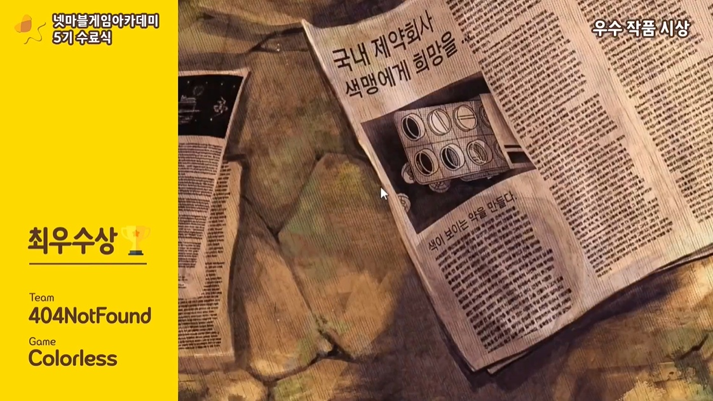
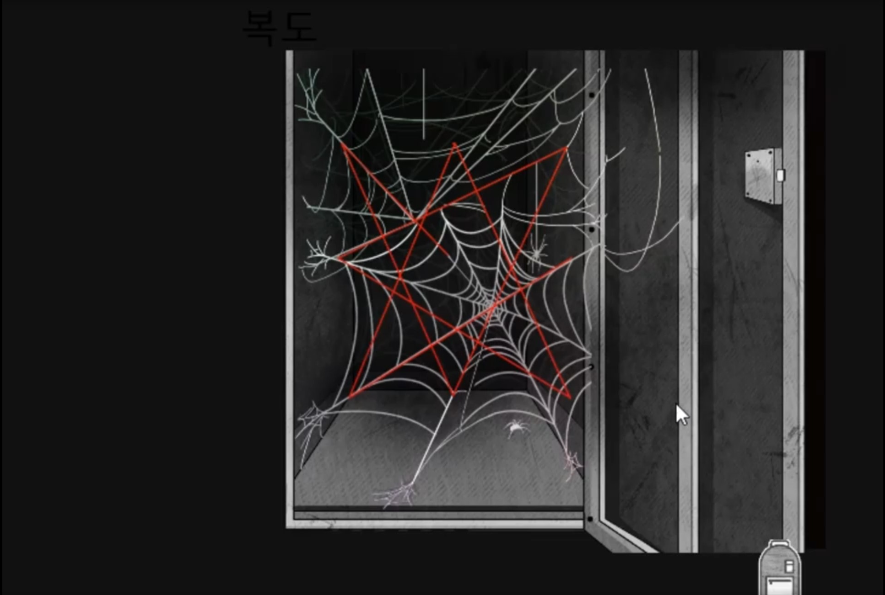
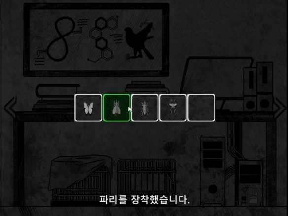
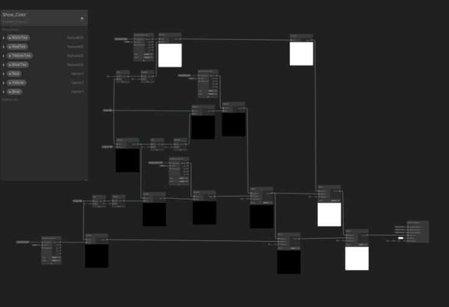
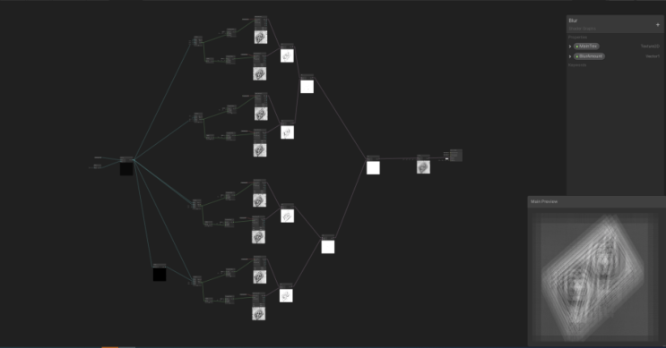

프로젝트 소개
- 팀 규모: 5명(기획1, 아트2, 개발2) -> 개발자로 참여(기여도: 35%)
- 프로젝트 성격: 팀 프로젝트
- 개발 기간: 개발 3개월
- 장르: 방탈출
- 게임 설명: 색맹인 주인공이 연구소를 탈출하는 게임
- 특이 사항: 넷마블 게임 아카데미 5기 최우수상 수상
프로젝트 성과
전체 플레이 영상 보기

넷마블 게임아카데미 5기
최우수상 수상작
담당 업무
• 퍼즐 구현

구현 방법
using UnityEngine;
public class Puzzle_MovingBlock : MonoBehaviour
{
public Canvas canvas;
public GameObject[] Stage;
public static int Current_State = 0;
Vector3 ClickPoint;
GameObject Block;
void Update()
{
if(!Puzzle_ClearMovingBlock.Clear)
{
if (Block != null)
{
Vector3 distence = Input.mousePosition - ClickPoint;
ClickPoint += distence;
Block.GetComponent<Rigidbody2D>().AddForce(distence * 100);
}
if (Current_State < 4)
{
for (int i = 0; i < Stage.Length; i++)
{
if (Current_State != i)
{
Stage[i].SetActive(false);
}
else
{
if (Stage[i].activeSelf != true)
{
Stage[i].SetActive(true);
}
}
}
}
else
{
Puzzle_ClearMovingBlock.Clear = true;
Player.isInteraction = false;
}
}
else
{
Subtitles.Load_Subtitles("이미 클리어한 퍼즐이다.");
}
}
public void Set_Block(GameObject obj)
{
Block = obj;
ClickPoint = Input.GetTouch(0).position;
}
public void Del_Block()
{
Block = null;
}
public static void NextStage()
{
Current_State++;
}
}
-블럭들마다 리지드바디의 Freeze 속성을 사용하여 이동방향을 고정
-클릭 시 블럭을 지정
-드래그 시 마우스 이동방향으로 힘을 가해 이동
패턴형식의 잠금장치를 이용하여 패턴의 모양 힌트를 찾기 위해 오브젝트를 조금 더 자세히 들여다보는 것을 의도하였습니다.
거미줄 사이에 빨간 선을 추가해 패턴에 대한 힌트를 숨겨두었지만 빨간색 약을 얻지 못했다면 흰색으로 보이기 때문에 찾기 힘들도록 만들어 플레이 순서를 유도하였습니다.
• 애니메이션


메인화면과 카멜레온 등을 조금 더 생동감있게 표현하기 위해 애니메이션을 작업했습니다.
• UI
플레이에 직접 사용해야하는 아이템들이 존재하여 인벤토리를 만들었습니다.
List 형태로 플레이어의 인벤토리 공간을 만들었으며 인벤토리의 아이템 클릭 시 아이템 정보를 저장하여 사용 시 없애는 방식으로 아이템 사용 기능을 작업하였습니다.
• 쉐이더 그래프
색맹인 주인공이 보는 배경을 표현하기 위해서 흑백 배경에서 점차 회복하는 과정을 만들었습니다.
이미지를 색깔 별로 만들어 기본 베이스 배경에 점차 합치며 표현하는 방식으로 제작하였습니다.

위의 쉐이더 그래프를 사용한 결과물입니다.
현미경의 초점을 맞추는 과정을 표현하기 위해 쉐이더 그래프를 사용하여 블러효과를 만들었습니다.
이미지를 여러개를 겹쳐 초점바를 통해 중심을 기점으로 이미지의 분포도와 투명도를 조절하여 하나의 이미지로 겹치게 되면 선명하게 보이게 되도록 작업하였습니다.
public class Puzzle_Pattern : MonoBehaviour
{
bool isunLocking = false;
public static bool Clear = false;
public Canvas canvas;
public GameObject LinePrefab;
private List<GameObject> Lines;
private List<GameObject> Circles;
private List<string> Currect_Puzzle = new List<string>() {"5", "1", "8", "3", "4", "9", "2", "7", "6"};
private GameObject lineOnEdit;
private RectTransform lineOnEditRcTs;
private GameObject circleOnEdit;
// Start is called before the first frame update
void Start()
{
Lines = new List<GameObject>();
Circles = new List<GameObject>();
}
// Update is called once per frame
void Update()
{
if(isunLocking)
{
Vector3 mousePos = canvas.transform.InverseTransformPoint(Input.mousePosition);
lineOnEditRcTs.sizeDelta = new Vector2(lineOnEditRcTs.sizeDelta.x, Vector3.Distance(mousePos, circleOnEdit.transform.localPosition));
lineOnEditRcTs.rotation = Quaternion.FromToRotation(Vector3.up, (mousePos - circleOnEdit.transform.localPosition).normalized);
}
}
void TrySetLineEdit(GameObject obj)
{
foreach(var circle in Circles)
{
if(circle.name.Equals(obj.name))
{
return;
}
}
lineOnEdit = CreateLine(obj.transform.localPosition, obj);
lineOnEditRcTs = lineOnEdit.GetComponent<RectTransform>();
circleOnEdit = obj;
}
GameObject CreateLine(Vector3 pos, GameObject obj)
{
var line = GameObject.Instantiate(LinePrefab, canvas.transform);
line.transform.localPosition = pos;
Lines.Add(line);
Circles.Add(obj);
return line;
}
void Check_Puzzle()
{
if (!Circles.Count.Equals(Currect_Puzzle.Count))
return;
for(int i = 0; i < Currect_Puzzle.Count; i++)
{
if(!Currect_Puzzle[i].Equals(Circles[i].name))
{
return;
}
}
InvokeRepeating("Welcome", 0.5f, 0.5f);
Invoke("InvokeCancel", 2f);
}
public void OnMouseEnterCircle(GameObject obj)
{
if (isunLocking)
{
lineOnEditRcTs.sizeDelta = new Vector2(lineOnEditRcTs.sizeDelta.x, Vector3.Distance(circleOnEdit.transform.localPosition, obj.transform.localPosition));
lineOnEditRcTs.rotation = Quaternion.FromToRotation(Vector3.up, (obj.transform.localPosition - circleOnEdit.transform.localPosition).normalized);
TrySetLineEdit(obj);
}
}
public void OnMouseDownCircle(GameObject obj)
{
if(!Clear)
{
isunLocking = true;
TrySetLineEdit(obj);
}
}
public void OnMouseUpCircle(GameObject obj)
{
isunLocking = false;
foreach(var line in Lines)
{
Destroy(line.gameObject);
}
Check_Puzzle();
Lines.Clear();
Circles.Clear();
lineOnEdit = null;
lineOnEditRcTs = null;
circleOnEdit = null;
}
void Welcome()
{
GameObject Welcome_Image = GameObject.Find("패턴인식기 메세지");
Subtitles.Load_Subtitles("문이 열렸습니다.");
Welcome_Image.GetComponent<Image>().enabled = !Welcome_Image.GetComponent<Image>().enabled;
}
void InvokeCancel()
{
CancelInvoke("Welcome");
Clear = true;
}
}
휴대폰 패턴을 구현한 코드입니다.
점을 누른 위치부터 시작하여 점을 통과할 때 마다 기록되고 손을 떼어냈을 때 정답과 비교하는 방식으로 제작하였습니다.
배운 점 & 느낀 점
- 각 파트별 작업물을 받을 때 어떤 방식으로 받아야 작업을 하는 데 필요한 리소스들을 추가로 가공하지 않고 사용할 수 있는지 알게 되었습니다.
- 모바일의 다양한 디스플레이 크기를 고려하지 못하고 다양한 환경에 대응하지 못해 화면상에서 오브젝트가 보이지 않는 경우가 생겼습니다. 다양한 변수들에 대응할 수 있도록 환경을 구축하는 방법을 미리 구상해야 한다는 사실을 배웠습니다.
- 쉐이더 그래프를 처음 사용하면서 새로운 기술을 학습하는 방식에 대해 배웠습니다. 새로운 기술에 대해서 학습할 때 이 기술을 이용해 어떤 기능을 만들 것인가로 처음 접근하여 기능을 만들며 사용된 기술의 원리를 이해하는 방식으로 학습했습니다.